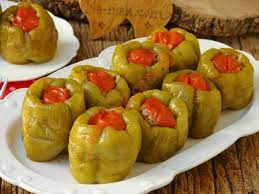

Odin Recipes
Soğansız Biber Dolması

Malzemeler
- Yarım kg dolmalık biber
- Her biber için 1 yemek kaşığı dolmalık pirinç
- 1 yemek kaşığı salça
- Maydanoz
- 2-3 adet domates
- Karabiber
- Tuz
- Nane
- Sıvı yağ-Zeytinyağı
Adım Adım Biber Dolması Nasıl Yapılır?
- Dolmalık biberleri temizleyin
- Domatesleri kapak olacak şekilde kenarlarını doğrayın geri kalanını da küçük küçük doğrayın
- Bir kaba hazırladığımız pirinç, salça, maydanoz, domates, karabiber, tuz, nane ve çok az sıvı yağı ekleyip iyice karıştırın
- Bu harcı biberlere doldurup kapaklarını kapatın
- Biberleri tencereye doldurdukça dizin
- Harcı yaptığınız kabın içine sıcak su dökün
- Kaba koyduğunuz suya 1 yemek kaşığı salça ekleyip eritin
- Bu karışımı biberlerin üstüne gelmeyecek şekilde tencereye biberlerin yarısına gelene kadar dökün
- Biberlerin üstüne çok az sıvı yağ veya zeytinyağı gezdirin
- Kısık ateşte pişirin
Afiyet olsun.